The one-minute answerAng sagot sa loob ng isang minutoAng tubag sulod sa usa ka minutoIng sagot kilub ning metung a minutu
The kidney uses energy to reclaim salt, water and nutrients from the fluid it filters. In diabetes, some kidney cells face a heavier workload just as their ability to use fuel and repair damage changes. One result can be damage to the fats that make up cell walls. In laboratory experiments, this damage can trigger an iron-dependent kind of cell death called ferroptosis. For people with diabetes today, two simple tests still guide treatment: the urine albumin test and the estimated kidney function (eGFR, estimated glomerular filtration rate).Gumagamit ng enerhiya ang bato para bawiin ang asin, tubig at sustansya mula sa likidong sinasala nito. Sa diabetes, mas mabigat ang trabaho ng ilang selula ng bato habang nagbabago rin ang kakayahan nilang gumamit ng gasolina at mag-ayos ng pinsala. Isang resulta nito ang pagkasira ng taba na bumubuo sa pader ng selula. Sa mga eksperimento sa laboratoryo, ang pinsalang ito ay maaaring magpasimula ng uri ng pagkamatay ng selula na nakadepende sa iron, na tinatawag na ferroptosis. Para sa mga taong may diabetes ngayon, dalawang simpleng pagsusuri pa rin ang gabay sa gamutan: ang urine albumin test at ang tinantyang kakayahan ng bato (eGFR, estimated glomerular filtration rate).Mogamit og enerhiya ang kidney aron bawion ang asin, tubig ug sustansya gikan sa likido nga gisala niini. Sa diabetes, mas bug-at ang trabaho sa pipila ka selula sa kidney samtang nag-usab usab ang ilang abilidad sa paggamit og gasolina ug pag-ayo sa kadaot. Usa ka resulta niini ang pagkadaot sa tambok nga nagporma sa bungbong sa selula. Sa mga eksperimento sa laboratoryo, kini nga kadaot mahimong magsugod og klase sa pagkamatay sa selula nga nagdepende sa iron, nga gitawag og ferroptosis. Alang sa mga tawo nga adunay diabetes karon, duha ka yano nga pagsulay gihapon ang giya sa pagtambal: ang urine albumin test ug ang gibanabana nga katakos sa kidney (eGFR, estimated glomerular filtration rate).Gagamit yang enerhiya ing batu ban bawian ne ing asin, danum at sustansya manibat king likidung sasalan na. King diabetes, mabayat la reng obra ning aliwang selula ning batu bayu mibabago ing kayan dang gamitan ing gasolina at ayusan ing pinsala. Metung a resulta na kaniti ing pamanira king taba a bubuo king pader ning selula. Kareng eksperimentu king laboratoryu, ing pinsalang iti malyari nang pasimulan ing klase ning pangamate ning selula a makasandal king iron, a ausan dang ferroptosis. Para kareng tau a atin diabetes ngeni, adwang simpleng pamanyubuk ing gabay pa murin king panamba: ing urine albumin test ampo ing tantiang kakayan ning batu (eGFR, estimated glomerular filtration rate).
Your kidneys are among the hardest-working organs in your bodyAng iyong mga bato ay kabilang sa pinakamasisipag na organo ng katawanAng imong mga kidney usa sa labing kugihan nga organo sa lawasReng batu mu kayabe la kareng pekamasipag a organu ning katawan
Every day your kidneys filter a large volume of blood and then take back almost all of the salt, water and sugar in it so that your body does not lose them in the urine. Taking these back is hard work. It is done mainly by a part of the kidney called the proximal tubule, a long, coiled tube right after each filter. Its cells are packed with tiny power plants called mitochondria, and their favorite fuel is fat, which they burn slowly and cleanly, like a well-tuned engine running on good fuel.Araw-araw, sinasala ng iyong mga bato ang malaking dami ng dugo at pagkatapos ay binabawi ang halos lahat ng asin, tubig at asukal dito para hindi ito masayang sa ihi. Mabigat na trabaho ang pagbawing ito. Ginagawa ito pangunahin ng bahagi ng bato na tinatawag na proximal tubule, isang mahabang paikot-ikot na tubo kasunod ng bawat salaan. Puno ang mga selula nito ng maliliit na planta ng kuryente na tinatawag na mitochondria, at ang paborito nilang gasolina ay taba, na sinusunog nila nang dahan-dahan at malinis, gaya ng maayos na makinang tumatakbo sa magandang gasolina.Matag adlaw, gisala sa imong mga kidney ang daghang dugo ug dayon gibawi ang hapit tanang asin, tubig ug asukal niini aron dili kini mausik sa ihi. Bug-at nga trabaho kining pagbawi. Kasagaran kini gibuhat sa bahin sa kidney nga gitawag og proximal tubule, usa ka taas ug liko-liko nga tubo human sa matag salaan. Puno ang mga selula niini og gagmay nga planta sa kuryente nga gitawag og mitochondria, ug ang ilang paborito nga gasolina mao ang tambok, nga ilang gisunog nga hinay ug limpyo, sama sa maayong makina nga nagdagan sa maayong gasolina.Aldo-aldo, sasalan dareng batu mu ing dakal a dara at kaybat babawian da ing malapit kabilang asin, danum at asukal kanita ban e masayang king isbu. Mabayat a obra ing pamamawing iti. Gagawan ne kayabe ning bage ning batu a ausan dang proximal tubule, metung a malawak at masikul-sikul a tubu kaybat ning balang salaan. Mitmu la reng selula na kareng malating planta kuryente a ausan dang mitochondria, at ing paburitu dang gasolina ya ing taba, a dadaluyan dang alalan at malinis, antimo ing mayap a makina a magpatakbu king mayap a gasolina.
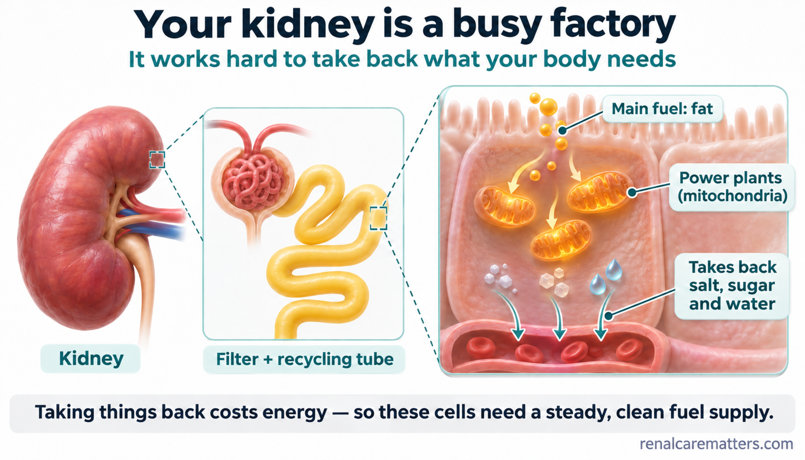
Your kidney works like a busy factory. Inside the tube cells, tiny power plants called mitochondria burn mainly fat to pay for taking back salt, sugar and water.Gumagana ang iyong bato na parang abalang pabrika. Sa loob ng mga selula ng tubo, ang maliliit na planta ng kuryente na tinatawag na mitochondria ay pangunahing sumusunog ng taba para may lakas na bawiin ang asin, asukal at tubig.Ang imong kidney molihok sama sa usa ka busy nga pabrika. Sulod sa mga selula sa tubo, ang gagmay nga planta sa kuryente nga gitawag og mitochondria kasagaran nagsunog og tambok aron adunay kusog sa pagbawi sa asin, asukal ug tubig.Ing batu mu antimo ya ing metung a abalang pabrika. King lub dareng selula ning tubu, ing malating planta ning kuryenti a ausan dang mitochondria, taba ing pekamaragul a dakalan da ban atin lakas king pamamawi king asin, asukal at danum.
Too many deliveries, a tired engine, and the wrong fuel mixSobrang daming dumarating, pagod na makina, at maling halo ng gasolinaSobra kadaghan nga padala, gikapoy nga makina, ug sayop nga sagol sa gasolinaSobrang dakal a datang, mapagal a makina, at maling laok ning gasolina
When blood sugar runs high for years, more sugar and salt pass through the kidney filter. The proximal tubule has to work overtime to take them back, which uses more energy and more oxygen. Over time, in some people, the tired power plants stop burning fat as well as before. Unused fat can pile up inside the cells, and the cells lean more on sugar-burning pathways. Scientists call this shift metabolic reprogramming. It does not happen the same way in every person, and some people lose kidney function without much protein in the urine.Kapag mataas ang asukal sa dugo nang maraming taon, mas maraming asukal at asin ang dumadaan sa salaan ng bato. Kailangang mag-overtime ang proximal tubule para bawiin ang mga ito, kaya mas maraming enerhiya at oxygen ang nagagamit. Sa paglipas ng panahon, sa ilang tao, hindi na kasinghusay ng dati ang pagsunog ng taba ng pagod na mga planta ng kuryente. Maaaring maipon ang hindi nagamit na taba sa loob ng selula, at mas umaasa ang mga selula sa pagsunog ng asukal. Tinatawag ito ng mga siyentipiko na metabolic reprogramming. Hindi ito pare-pareho sa bawat tao, at may mga taong nawawalan ng kakayahan ng bato kahit kaunti lamang ang protina sa ihi.Kon taas ang asukal sa dugo sulod sa daghang tuig, mas daghang asukal ug asin ang moagi sa salaan sa kidney. Kinahanglan mag-overtime ang proximal tubule aron bawion kini, busa mas daghang enerhiya ug oxygen ang magamit. Sa paglabay sa panahon, sa pipila ka tawo, dili na sama kaayo kaniadto ang pagsunog og tambok sa gikapoy nga mga planta sa kuryente. Mahimong matapok ang wala magamit nga tambok sulod sa selula, ug mas mosalig ang mga selula sa pagsunog og asukal. Gitawag kini sa mga siyentista og metabolic reprogramming. Dili kini parehas sa matag tawo, ug adunay mga tawo nga mawad-an og katakos sa kidney bisan gamay ra ang protina sa ihi.Nung matas ing asukal king dara kilub ning dakal a banwa, mas dakal a asukal at asin ing lalabas king salaan ning batu. Kailangan mag-overtime ning proximal tubule ban bawian la reti, anya mas dakal a enerhiya at oxygen ing magamit. Kabang malabas ing panaun, kareng aliwang tau, e na kasing mayap anggang dati ing pamanaluyan taba dareng mapagal a planta kuryente. Malyaring mitipun ing e megamit a taba king lub ning selula, at mas manyandal la reng selula king pamanaluyan asukal. Ausan da reng siyentipiku iti metabolic reprogramming. E pareu-pareu iti king balang tau, at atin tau a mawawalan kakayan ning batu agyang dakit mu ing protina king isbu.
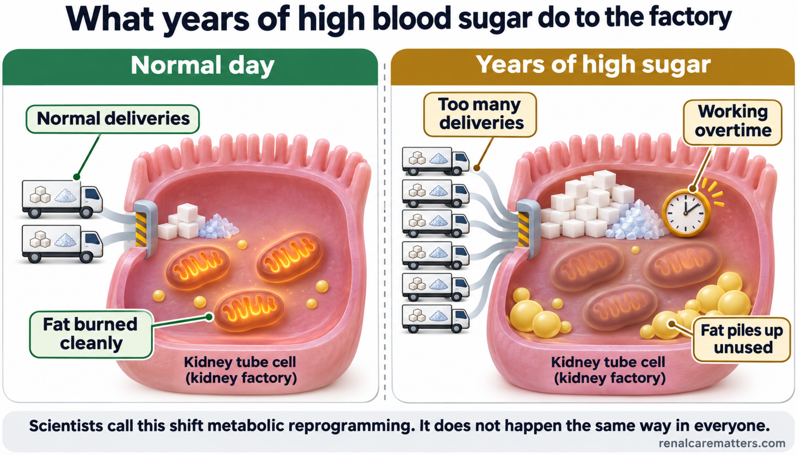
Years of high blood sugar bring too many sugar and salt "deliveries." The cell works overtime, its power plants tire, and unused fat piles up. Scientists call this shift metabolic reprogramming, and it does not happen the same way in everyone.Ang ilang taon ng mataas na asukal sa dugo ay nagdadala ng sobrang daming "deliveries" ng asukal at asin. Nag-o-overtime ang selula, napapagod ang mga planta ng kuryente nito, at naiipon ang hindi nagagamit na taba. Tinatawag ito ng mga siyentipiko na metabolic reprogramming, at hindi ito pare-pareho sa lahat.Ang pipila ka tuig nga taas nga asukal sa dugo nagdala og sobra kadaghang "deliveries" sa asukal ug asin. Nag-overtime ang selula, nakapoy ang mga planta sa kuryente niini, ug natipon ang wala magamit nga tambok. Gitawag kini sa mga siyentista og metabolic reprogramming, ug dili kini parehas sa tanan.Ing dakal a banwa a matas ing asukal king dara magdala yang sobrang dakal a "deliveries" ning asukal at asin. Mag-overtime ing selula, mapagal la reng planta na ning kuryenti, at mitipun ing e magamit a taba. Ausan da reti dareng siyentipiku a metabolic reprogramming, at e ya pareu king sablang tau.
Ferroptosis: when cell walls "rust"Ferroptosis: kapag "kinakalawang" ang pader ng selulaFerroptosis: kon "nagtaya" ang bungbong sa selulaFerroptosis: nung "kalawangan" ing pader ning selula
Every cell is wrapped in a thin wall made partly of fats. Some of these fats are delicate. When iron inside the cell meets these delicate fats under stress, a chain reaction can damage the wall, a little like rust spreading across a gate left out in the rain. Cells normally carry an "anti-rust crew" (a substance called glutathione and an enzyme called GPX4, glutathione peroxidase 4) that stops the chain early. If the crew runs short, the wall fails and the cell dies. Scientists named this kind of cell death ferroptosis, from the Latin word for iron.Bawat selula ay nababalot ng manipis na pader na bahagyang gawa sa taba. Maselan ang ilan sa mga tabang ito. Kapag nagtagpo ang iron sa loob ng selula at ang maselang taba habang may stress, maaaring masira ng isang tuloy-tuloy na reaksyon ang pader, gaya ng kalawang na kumakalat sa gate na naiwan sa ulan. Karaniwang may dalang "anti-rust crew" ang selula (isang sangkap na tinatawag na glutathione at isang enzyme na tinatawag na GPX4, glutathione peroxidase 4) na pumipigil sa reaksyon nang maaga. Kapag kinulang ang crew, bumibigay ang pader at namamatay ang selula. Pinangalanan ng mga siyentipiko ang ganitong pagkamatay ng selula na ferroptosis, mula sa salitang Latin para sa iron.Ang matag selula giputos sa nipis nga bungbong nga bahin nga hinimo sa tambok. Ang pipila niini nga tambok delikado. Kon ang iron sulod sa selula makasugat niining delikado nga tambok samtang adunay stress, ang usa ka padayon nga reaksyon mahimong makadaot sa bungbong, sama sa taya nga mokaylap sa gate nga nabiyaan sa ulan. Kasagaran adunay "anti-rust crew" ang selula (usa ka sangkap nga gitawag og glutathione ug usa ka enzyme nga gitawag og GPX4, glutathione peroxidase 4) nga mopugong sa reaksyon sa sayo pa. Kon makulangan ang crew, mobigay ang bungbong ug mamatay ang selula. Ginganlan sa mga siyentista kini nga klase sa pagkamatay sa selula og ferroptosis, gikan sa pulong nga Latin para sa iron.Balang selula makaputus ya king manipis a pader a bage-bage gewa king taba. Maselan ing aliwa kareng taba a reti. Nung misabak ing iron king lub ning selula ampo ing maselang taba kabang atin stress, ing metung a tuloy-tuloy a reaksyun malyari nang sirain ing pader, antimo ing kalawang a kakalat king gate a melako king uran. Karaniwan atin "anti-rust crew" ing selula (metung a sangkap a ausan dang glutathione ampo ing metung a enzyme a ausan dang GPX4, glutathione peroxidase 4) a pupugne king reaksyun bayu pa lumala. Nung kulang ing crew, magibigay ing pader at mate ya ing selula. Inalan da reng siyentipiku ing klase ning pangamate ning selula a iti ferroptosis, manibat king amanung Latin para king iron.
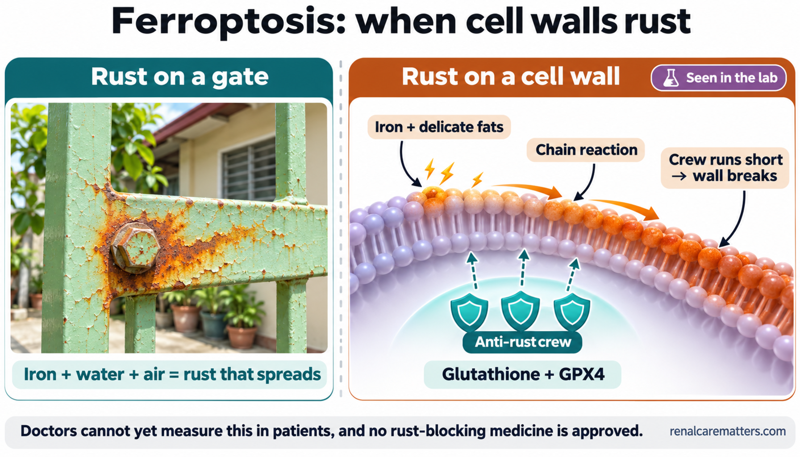
Rust spreads on a gate when iron meets water and air. In a similar way, iron and delicate fats can start a chain reaction on a cell wall, and an "anti-rust crew" normally stops it. This is seen in the lab; doctors cannot yet measure it in patients.Kumakalat ang kalawang sa gate kapag nagtagpo ang bakal, tubig at hangin. Sa katulad na paraan, ang iron at maselang taba ay maaaring magsimula ng tuloy-tuloy na reaksyon sa pader ng selula, at karaniwang pinipigilan ito ng isang "anti-rust crew." Nakikita ito sa laboratoryo; hindi pa ito nasusukat ng mga doktor sa mga pasyente.Mokaylap ang taya sa gate kon magtagbo ang puthaw, tubig ug hangin. Sa samang paagi, ang iron ug maselan nga tambok makasugod og padayon nga reaksyon sa bungbong sa selula, ug kasagaran kini gipugngan sa usa ka "anti-rust crew." Makita kini sa laboratoryo; dili pa kini masukod sa mga doktor sa mga pasyente.Kakalat ya ing kalawang king gate nung misabak ing bakal, danum at angin. King pareung paralan, ing iron at maselang taba malyari lang magumpisang tuloy-tuloy a reaksyun king pader ning selula, at karaniwan pipigilan ne ning "anti-rust crew." Akakit ya iti king laboratoryu; e pa misukad dareng doktor kareng pasyente.
- GPX4
- Glutathione peroxidase 4
What we know, and what we do notAno ang alam natin, at ano ang hindi paUnsa ang nahibal-an nato, ug unsa ang wala paNanu ing balu tamu, at nanu ing e pa
Kidney biopsies from people with diabetes show marks that fit this rusting process. Laboratory experiments show it can kill kidney cells. But doctors cannot yet measure it in a patient, and no medicine that blocks it has been approved. The proven kidney medicines in this guide were tested on kidney failure, not on rusting.Ang mga biopsy ng bato mula sa mga taong may diabetes ay may mga palatandaan na tugma sa prosesong ito ng kalawang. Ipinapakita ng mga eksperimento sa laboratoryo na maaari itong pumatay ng selula ng bato. Pero hindi pa ito nasusukat ng mga doktor sa pasyente, at wala pang aprubadong gamot na humaharang dito. Ang mga napatunayang gamot sa bato sa gabay na ito ay sinubukan laban sa pagkasira ng bato, hindi laban sa kalawang.Ang mga biopsy sa kidney gikan sa mga tawo nga adunay diabetes adunay mga timailhan nga mohaum niining proseso sa taya. Gipakita sa mga eksperimento sa laboratoryo nga makapatay kini og selula sa kidney. Apan dili pa kini masukod sa mga doktor sa pasyente, ug wala pay aprobado nga tambal nga mobabag niini. Ang napamatud-an nga mga tambal sa kidney niini nga giya gisulayan batok sa pagkadaot sa kidney, dili batok sa taya.Reng biopsy ning batu manibat kareng tau a atin diabetes atin lang tanda a sasabe king prosesung iti ning kalawang. Pakit dareng eksperimentu king laboratoryu a malyari nang pate reng selula ning batu. Dapot e pa misukad dareng doktor iti king pasyente, at ala pang aprubadung gamut a pupugne kaniti. Reng mepatuneng gamut king batu king gabay a iti mesubuk la laban king pangasira ning batu, e laban king kalawang.
Urine albumin and eGFR still steer the treatmentAng urine albumin at eGFR pa rin ang gabay sa gamutanAng urine albumin ug eGFR gihapon ang giya sa pagtambalIng urine albumin at eGFR pa murin ing gabay king panamba
The urine albumin test, reported as the urine albumin-to-creatinine ratio (UACR), shows how much of a blood protein called albumin is leaking through the kidney filter. The eGFR blood test estimates how much filtering the kidneys are doing. Because urine albumin can change from day to day with exercise, fever, a urine infection, a menstrual period or very high sugar, a doctor usually needs two of three samples over three to six months before calling the leak persistent.Ipinapakita ng urine albumin test, na iniuulat bilang urine albumin-to-creatinine ratio (UACR), kung gaano karaming protina sa dugo na tinatawag na albumin ang tumatagas sa salaan ng bato. Tinatantya naman ng eGFR blood test kung gaano kalaki ang pagsasalang ginagawa ng bato. Dahil nagbabago ang urine albumin araw-araw dahil sa ehersisyo, lagnat, impeksyon sa ihi, regla o napakataas na asukal, karaniwang kailangan ng doktor ang dalawa sa tatlong sample sa loob ng tatlo hanggang anim na buwan bago tawaging tuloy-tuloy ang tagas.Gipakita sa urine albumin test, nga gireport isip urine albumin-to-creatinine ratio (UACR), kung pila ka protina sa dugo nga gitawag og albumin ang nagtulo sa salaan sa kidney. Gibanabana sa eGFR blood test kung pila ka pagsala ang gibuhat sa kidney. Tungod kay mag-usab usab ang urine albumin adlaw-adlaw tungod sa ehersisyo, hilanat, impeksyon sa ihi, regla o taas kaayo nga asukal, kasagaran kinahanglan sa doktor ang duha sa tulo ka sample sulod sa tulo ngadto sa unom ka bulan una tawgon nga padayon ang pagtulo.Pakit ning urine albumin test, a i-report bilang urine albumin-to-creatinine ratio (UACR), nung pilan a protina king dara a ausan dang albumin ing tatagas king salaan ning batu. Tatantiyan naman ning eGFR blood test nung pilan ing pamanyala a gagawan dareng batu. Uli ta mibabago ing urine albumin aldo-aldo uli king ehersisyu, lagnat, impeksyun king isbu, regla o makatas a asukal, karaniwan kailangan ning doktor ing adwa kareng atlung sample kilub ning atlu anggang anam a bulan bayu na ausan tuloy-tuloy ing tagas.
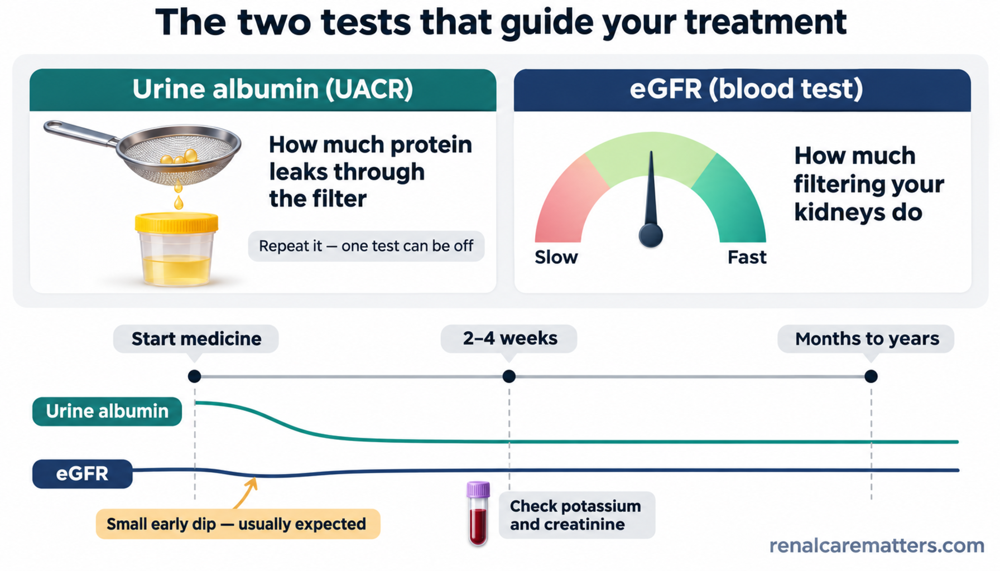
Urine albumin shows the leak; eGFR shows how much filtering is done. After a kidney-protective medicine starts, albumin often falls within weeks while eGFR may dip a little at first, which is usually expected. Blood is rechecked at 2 to 4 weeks.Ipinapakita ng urine albumin ang tagas; ipinapakita ng eGFR kung gaano karami ang nasasala. Pagkasimula ng gamot na nagpoprotekta sa bato, madalas bumababa ang albumin sa loob ng ilang linggo habang maaaring bahagyang bumaba muna ang eGFR, na karaniwang inaasahan. Sinusuri muli ang dugo sa ika-2 hanggang ika-4 na linggo.Ang urine albumin nagpakita sa tulo; ang eGFR nagpakita kon pila ang nasala. Human sugdi ang tambal nga nanalipod sa kidney, kasagaran mous-os ang albumin sulod sa pipila ka semana samtang ang eGFR mahimong mous-os og gamay sa sinugdanan, nga kasagaran gipaabot. Susihon pag-usab ang dugo sa ika-2 hangtod ika-4 nga semana.Ipakit na ning urine albumin ing tulu; ipakit na ning eGFR nung pilan ing sasalan. Kaybat dang umpisan ing gamut a manalinga king batu, malaus a mababa ya ing albumin kilub ning pilang dominggu, at ing eGFR malyari yang mababa dapot kakaldit king umpisa, a karaniwan inaasahan. Susuriyan neng pasibayu ing dara king 2 anggang 4 a dominggu.
- eGFR
- Estimated glomerular filtration rate
- UACR
- Urine albumin-to-creatinine ratio
Good to know: after you start a kidney-protective medicine, urine albumin often falls within weeks, long before eGFR shows any change. And eGFR may dip a little in the first month because the medicine eases pressure inside the filters. A small, expected dip is usually a reason to continue, not to stop. Your doctor will recheck potassium and creatinine two to four weeks after starting or changing the dose.Mabuting malaman: pagkatapos simulan ang gamot na nagpoprotekta sa bato, madalas bumababa ang urine albumin sa loob ng ilang linggo, matagal bago makitaan ng pagbabago ang eGFR. Maaari ring bumaba nang kaunti ang eGFR sa unang buwan dahil pinapagaan ng gamot ang presyon sa loob ng salaan. Ang maliit at inaasahang pagbaba ay kadalasang dahilan para ituloy, hindi para itigil. Muling susuriin ng doktor ang potassium at creatinine dalawa hanggang apat na linggo matapos magsimula o magpalit ng dosis.Maayo nga mahibal-an: human sugdan ang tambal nga manalipod sa kidney, kasagaran mokunhod ang urine albumin sulod sa pipila ka semana, dugay pa una makitaan og kausaban ang eGFR. Mahimo usab nga mokunhod og gamay ang eGFR sa unang bulan kay gipagaan sa tambal ang presyon sulod sa salaan. Ang gamay ug gipaabot nga pagkunhod kasagaran rason aron ipadayon, dili aron ihunong. Susihon pag-usab sa doktor ang potassium ug creatinine duha ngadto sa upat ka semana human sugdi o usba ang dosis.Mayap a balu: kaybat mung megumpisa king gamut a pamanyaga king batu, kadalasan bababa ing urine albumin kilub ning apat-limang dominggu, malaun pa bayu atin pamagbayu king eGFR. Malyari muring bumaba dakit ing eGFR king mumunang bulan uling papagaanan ning gamut ing presyun king lub ning salaan. Ing malati at inaasahang pamababa kadalasan dahilan ban ituloy, e ban pakatulian. Susuyubukan pasibayu ning doktor ing potassium at creatinine adwa anggang apat a dominggu kaybat ning pamigumpisa o pamanaliwa dosis.
Four kinds of medicine that ease the kidney's workloadApat na uri ng gamot na nagpapagaan sa trabaho ng batoUpat ka klase sa tambal nga mopagaan sa trabaho sa kidneyApat a klase ning gamut a papagaanan ing obra ning batu
These medicines were tested in large studies of thousands of people and lowered the chance of kidney failure, dialysis or death from heart or kidney causes. Not everyone needs all four, and each has its own safety checks.Sinubukan ang mga gamot na ito sa malalaking pag-aaral ng libu-libong tao at pinababa nito ang posibilidad ng pagkasira ng bato, dialysis o kamatayan dahil sa puso o bato. Hindi lahat ay nangangailangan ng apat, at bawat isa ay may sariling pagsusuri para sa kaligtasan.Gisulayan kini nga mga tambal sa dagkong pagtuon sa liboan ka tawo ug gipaubos niini ang tsansa sa pagkadaot sa kidney, dialysis o kamatayon tungod sa kasingkasing o kidney. Dili tanan nagkinahanglan sa upat, ug ang matag usa adunay kaugalingong pagsusi alang sa kaluwasan.Mesubuk la reng gamut a reti kareng maragul a pamagaral ning libu-libung tau at pebababa da ing tsansa ning pangasira ning batu, dialysis o pangamate uli king puso o batu. E ngan kailangan ing apat, at balang metung atin sariling pamanyubuk para king kaligtasan.
| Medicine groupGrupo ng gamotGrupo sa tambalGrupu ning gamut | How it helps the enginePaano ito nakatutulong sa makinaGiunsa niini pagtabang sa makinaNanu ya ing pamakatulung na king makina | Watch forBantayanBantayiBantayan |
|---|---|---|
| ACE (angiotensin-converting enzyme) inhibitor or ARB (angiotensin receptor blocker), such as losartan or telmisartanACE (angiotensin-converting enzyme) inhibitor o ARB (angiotensin receptor blocker), gaya ng losartan o telmisartanACE (angiotensin-converting enzyme) inhibitor o ARB (angiotensin receptor blocker), sama sa losartan o telmisartanACE (angiotensin-converting enzyme) inhibitor o ARB (angiotensin receptor blocker), antimo ing losartan o telmisartan | Lowers the pressure inside each filter so less albumin leaksPinabababa ang presyon sa loob ng bawat salaan kaya mas kaunting albumin ang tumatagasGipaubos ang presyon sulod sa matag salaan busa mas gamay nga albumin ang motuloPababanan ing presyun king lub ning balang salaan anya dakit ing albumin a tatagas | Potassium, dizzinessPotassium, pagkahiloPotassium, pagkalipongPotassium, pamagkaliu |
| SGLT2 (sodium-glucose cotransporter 2) inhibitor, such as dapagliflozin or empagliflozinSGLT2 (sodium-glucose cotransporter 2) inhibitor, gaya ng dapagliflozin o empagliflozinSGLT2 (sodium-glucose cotransporter 2) inhibitor, sama sa dapagliflozin o empagliflozinSGLT2 (sodium-glucose cotransporter 2) inhibitor, antimo ing dapagliflozin o empagliflozin | Lets some sugar and salt leave in the urine, so the tubule does less overtime; may nudge cells toward a cleaner fuelPinalalabas ang ilang asukal at asin sa ihi, kaya mas kaunti ang overtime ng tubule; maaaring itulak ang selula sa mas malinis na gasolinaGipagawas ang pipila ka asukal ug asin sa ihi, busa mas gamay ang overtime sa tubule; mahimong iduso ang selula ngadto sa mas limpyo nga gasolinaPapalwalan ing aliwang asukal at asin king isbu, anya dakit ing overtime ning tubule; malyari nang itulak ing selula king mas malinis a gasolina | Genital yeast infection, dehydration, rare ketoacidosisYeast infection sa ari, dehydration, bihirang ketoacidosisYeast infection sa kinatawo, dehydration, talagsaon nga ketoacidosisYeast infection king kiki o batu, dehydration, bihirang ketoacidosis |
| FinerenoneFinerenoneFinerenoneFinerenone | Calms a hormone signal that drives swelling and scarring in the kidneyPinakakalma ang hormone signal na nagdudulot ng pamamaga at pagpepeklat sa batoGipakalma ang hormone signal nga hinungdan sa panghubag ug pagpeklat sa kidneyPapakalman ing hormone signal a gagawang pamamaga at pamanlukal king batu | PotassiumPotassiumPotassiumPotassium |
| GLP-1 (glucagon-like peptide-1) medicine, such as semaglutideGLP-1 (glucagon-like peptide-1) na gamot, gaya ng semaglutideGLP-1 (glucagon-like peptide-1) nga tambal, sama sa semaglutideGLP-1 (glucagon-like peptide-1) a gamut, antimo ing semaglutide | Lowers sugar and weight; in a 2026 study it also improved blood vessel signals in kidney tissuePinabababa ang asukal at timbang; sa isang pag-aaral noong 2026, pinabuti rin nito ang mga senyales ng ugat sa tisyu ng batoGipaubos ang asukal ug timbang; sa usa ka pagtuon sa 2026, gipaayo usab niini ang mga timailhan sa ugat sa tisyu sa kidneyPababanan ing asukal at timbang; king metung a pamagaral king 2026, pinayap na muri ing tanda ning ugat king tisyu ning batu | Nausea, poor appetite, dehydrationPagduduwal, walang gana, dehydrationKasukaon, walay gana, dehydrationPamagsuka, alang gana, dehydration |
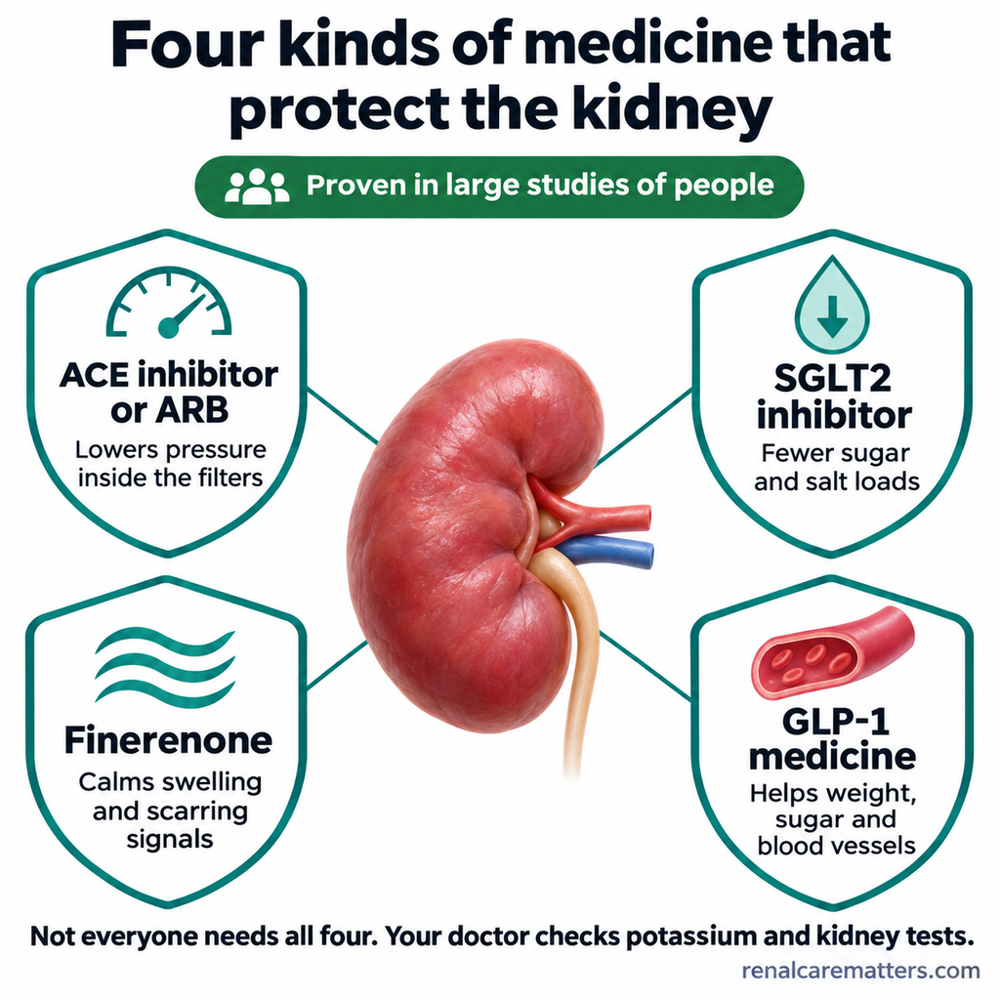
Four kinds of medicine, each easing a different part of the kidney's workload, all proven in large studies of people. Not everyone needs all four, and your doctor checks potassium and kidney tests.Apat na uri ng gamot, bawat isa ay nagpapagaan ng ibang bahagi ng trabaho ng bato, at lahat ay napatunayan sa malalaking pag-aaral sa tao. Hindi lahat ay nangangailangan ng apat, at sinusuri ng iyong doktor ang potassium at mga pagsusuri sa bato.Upat ka klase sa tambal, matag usa nagpagaan sa lainlaing bahin sa trabaho sa kidney, ug tanan napamatud-an sa dagkong pagtuon sa mga tawo. Dili tanan nagkinahanglan sa upat, ug susihon sa imong doktor ang potassium ug mga pagsulay sa kidney.Apat a klasi ning gamut, balang metung pagaanan na ing aliwang bage ning obra ning batu, at sablang mepatune king maragul a pamanigaral kareng tau. E sablang tau mangailangan king apat, at susuriyan na ning doktor mu ing potassium at reng test king batu.
- ACE
- Angiotensin-converting enzyme
- ARB
- Angiotensin receptor blocker
- GLP-1
- Glucagon-like peptide-1
- SGLT2
- Sodium-glucose cotransporter 2
Doctors may now start an SGLT2 inhibitor and finerenone together in selected people with type 2 diabetes, because a 2025 study showed a bigger fall in urine albumin with the pair than with either one alone. That study measured albumin, not kidney failure, so your doctor will still check potassium and kidney numbers closely.Maaari nang sabay na simulan ng doktor ang SGLT2 inhibitor at finerenone sa piling tao na may type 2 diabetes, dahil ipinakita ng isang pag-aaral noong 2025 na mas malaki ang pagbaba ng urine albumin kapag magkasama kaysa isa lamang. Albumin ang sinukat ng pag-aaral, hindi pagkasira ng bato, kaya maingat pa ring babantayan ng doktor ang potassium at mga numero ng bato.Mahimo na nga dungan sugdan sa doktor ang SGLT2 inhibitor ug finerenone sa pinili nga mga tawo nga adunay type 2 diabetes, tungod kay gipakita sa usa ka pagtuon sa 2025 nga mas dako ang pagkunhod sa urine albumin kon magkauban kaysa usa ra. Albumin ang gisukod sa pagtuon, dili pagkadaot sa kidney, busa bantayan gihapon pag-ayo sa doktor ang potassium ug mga numero sa kidney.Malyari na ngeni ning doktor a sabayan ing pamigumpisa king SGLT2 inhibitor at finerenone kareng pinili a tau a atin type 2 diabetes, uling pakit ning metung a pamagaral king 2025 a mas maragul ing pamababa ning urine albumin nung misabe la kesa metung mu. Albumin ing sinukad ning pamagaral, e ing pangasira ning batu, anya bantayan da pa murin dareng doktor ing potassium at reng numeru ning batu.
Treatment is a conversation. Bring your latest urine albumin and eGFR results, your medicine list and a family member to each visit, so the plan can be adjusted together.Ang gamutan ay isang usapan. Dalhin ang pinakabagong resulta ng urine albumin at eGFR, ang listahan ng iyong gamot at isang kapamilya sa bawat pagbisita, para sabay-sabay na maiayos ang plano.Ang pagtambal usa ka panag-istoryahanay. Dad-a ang pinakabag-ong resulta sa urine albumin ug eGFR, ang lista sa imong tambal ug usa ka kapamilya sa matag bisita, aron dungan nga maayo ang plano.Ing panggamut metung yang pamisabi-sabi. Dalan me ing bayung resulta ning urine albumin at eGFR, ing listaan ning gamut mu at metung a kapamilya king balang bisita, ban samasama yang maayus ing plano.
What you can do, and what to skipAno ang magagawa mo, at ano ang dapat iwasanUnsa ang imong mabuhat, ug unsa ang likayanNanu ing agawa mu, at nanu ing pakaliwasan
Steady blood sugar means fewer sugar "deliveries" pounding the tubule. Practical steps on a Filipino plate: smaller rice portions or part brown rice, fewer sugary drinks such as soft drinks, sweetened iced tea and 3-in-1 coffee, and less salty, processed and fried food. Regular walking or other activity, most days of the week, helps muscles use sugar and fat better. Good sleep and stopping smoking help blood vessels. Do not start a high-protein diet without asking your kidney doctor.Ang matatag na asukal sa dugo ay nangangahulugang mas kaunting "padala" ng asukal na bumabayo sa tubule. Praktikal na hakbang sa pinggang Pilipino: mas maliit na kanin o haluan ng brown rice, mas kaunting matatamis na inumin gaya ng softdrinks, matamis na iced tea at 3-in-1 na kape, at mas kaunting maalat, processed at pritong pagkain. Ang regular na paglalakad o iba pang galaw, karamihan ng araw sa isang linggo, ay tumutulong sa kalamnan na mas magamit ang asukal at taba. Ang maayos na tulog at pagtigil sa paninigarilyo ay nakatutulong sa ugat. Huwag magsimula ng high-protein diet nang hindi nagtatanong sa iyong doktor sa bato.Ang lig-on nga asukal sa dugo nagpasabot og mas gamay nga "padala" sa asukal nga mobunal sa tubule. Praktikal nga lakang sa plato sa Pilipino: mas gamay nga kan-on o sagolan og brown rice, mas gamay nga tam-is nga ilimnon sama sa softdrinks, tam-is nga iced tea ug 3-in-1 nga kape, ug mas gamay nga parat, processed ug prito nga pagkaon. Ang regular nga paglakaw o ubang lihok, kadaghanan sa adlaw sa usa ka semana, motabang sa kaunuran nga mas magamit ang asukal ug tambok. Ang maayong tulog ug paghunong sa pagpanigarilyo motabang sa ugat. Ayaw pagsugod og high-protein diet nga wala mangutana sa imong doktor sa kidney.Ing matatag a asukal king dara kayulugan na dakit a "padala" ning asukal a babayu king tubule. Praktikal a lakad king pingang Kapampangan: mas malating nasi o laukan brown rice, dakit a matamis a inumen antimo ing softdrinks, matamis a iced tea at 3-in-1 a kape, at dakit a maalat, processed at pritung pamangan. Ing regular a pamanlakad o aliwang kilus, kayabe ning aldo king metung a dominggu, tutulung kareng laman ban mas gamitan ing asukal at taba. Ing mayap a tudtud at pamikatuli king panigarilyu tutulung king ugat. E ka mamigumpisa high-protein diet nung e ka mamakiramdam king doktor mu king batu.
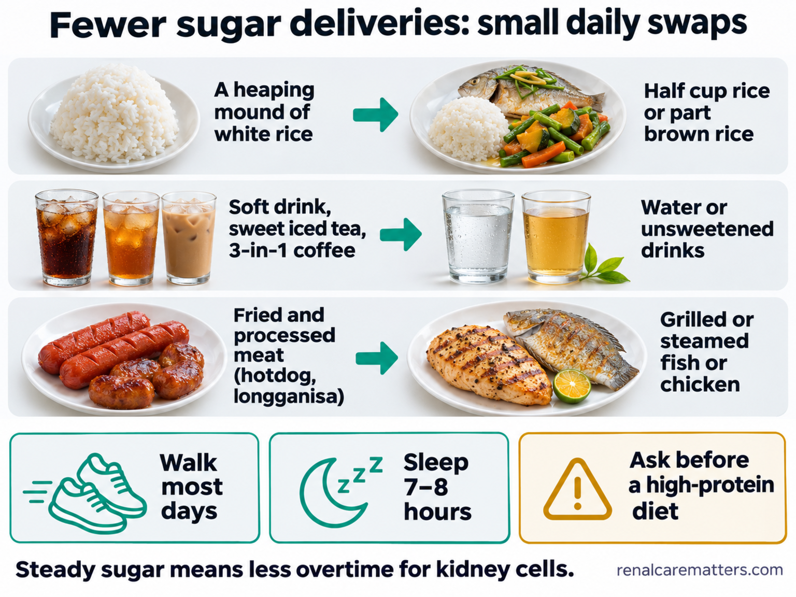
Small daily swaps on a Filipino plate mean fewer sugar "deliveries" to the kidney: less rice, no sugary drinks, less fried and processed meat, more walking and enough sleep. Ask your doctor before starting a high-protein diet.Ang maliliit na pagpapalit sa pinggang Pilipino ay nangangahulugan ng mas kaunting "deliveries" ng asukal sa bato: mas kaunting kanin, walang matatamis na inumin, mas kaunting prito at processed na karne, mas maraming paglalakad at sapat na tulog. Magtanong muna sa doktor bago magsimula ng high-protein diet.Ang gagmay nga pag-ilis sa plato sa Pilipino nagpasabot og mas gamay nga "deliveries" sa asukal ngadto sa kidney: mas gamay nga kan-on, walay tam-is nga ilimnon, mas gamay nga prito ug processed nga karne, mas daghang paglakaw ug igong tulog. Pangutan-a ang doktor sa dili pa magsugod og high-protein diet.Ing malating pamagsalili king pinggan a Pilipinu, mas kakaunti a "deliveries" ning asukal king batu: mas kakaunting nasi, alang matamis a inumin, mas kakaunting prito at processed a karni, mas dakal a pamanglakad at sapat a tudtud. Mikutang king doktor bayu ka magumpisa king high-protein diet.
Skip the "anti-rust" pills and herbsIwasan ang mga "anti-rust" na tableta at halamang-gamotLikayi ang mga "anti-rust" nga pildoras ug tanom-tambalLiwasan ing "anti-rust" a tableta at tanaman-gamut
Products sold as antioxidants, mitochondria boosters or "anti-ferroptosis" cures have animal data at best. One human study in kidney disease tested two such supplements and found no gain in exercise capacity or kidney function. Some herbal sources, such as thunder god vine, can harm the liver and kidneys. Do not stop iron your doctor prescribed because of posts that say iron causes rust: treating true iron deficiency in kidney disease remains standard care.Ang mga produktong ibinebenta bilang antioxidant, pampalakas ng mitochondria o lunas na "anti-ferroptosis" ay may datos lamang sa hayop. Isang pag-aaral sa tao na may sakit sa bato ang sumubok ng dalawang ganitong supplement at walang nakitang pagbuti sa kakayahang mag-ehersisyo o sa bato. Ang ilang halamang-gamot, gaya ng thunder god vine, ay maaaring makapinsala sa atay at bato. Huwag itigil ang iron na inireseta ng doktor dahil sa mga post na nagsasabing nagdudulot ang iron ng kalawang: ang paggamot sa tunay na kakulangan sa iron sa sakit sa bato ay pamantayang pangangalaga pa rin.Ang mga produkto nga gibaligya isip antioxidant, pangpalig-on sa mitochondria o tambal nga "anti-ferroptosis" adunay datos lang sa hayop. Usa ka pagtuon sa tawo nga adunay sakit sa kidney ang misulay og duha ka ingon niini nga supplement ug walay nakit-an nga pag-uswag sa katakos sa pag-ehersisyo o sa kidney. Ang pipila ka tanom-tambal, sama sa thunder god vine, makadaot sa atay ug kidney. Ayaw ihunong ang iron nga gireseta sa doktor tungod sa mga post nga nag-ingon nga ang iron hinungdan sa taya: ang pagtambal sa tinuod nga kakulang sa iron sa sakit sa kidney nagpabilin nga sumbanan nga pag-atiman.Reng produktung piyagbili bilang antioxidant, pampakaskas mitochondria o panamba a "anti-ferroptosis" atin la mung datos king animal. Metung a pamagaral king tau a atin sakit king batu ing sinubuk king adwang supplement a ing anti at ala lang akit a pamagumpaya king kakayan mag-ehersisyu o king batu. Reng aliwang tanaman-gamut, antimo ing thunder god vine, malyari dang sirain ing atay at batu. E mu pakatulian ing iron a nireseta ning doktor uli kareng post a sasabing iron ing gagawang kalawang: ing panamba king tutung kakulangan iron king sakit king batu pamantayang pamag-alaga pa murin.
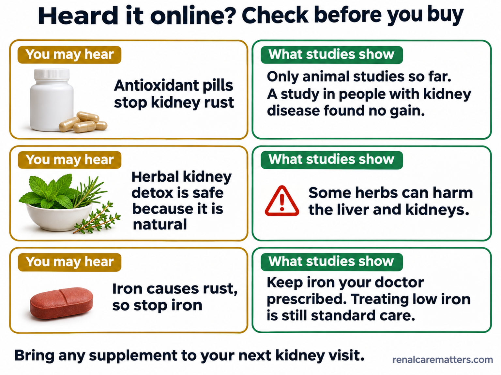
Antioxidant pills and herbal "detox" products are not proven to protect the kidney, and some herbs can harm it. Keep any iron your doctor prescribed, and bring every supplement to your next kidney visit.Hindi napatunayang nagpoprotekta sa bato ang mga antioxidant na tableta at herbal na "detox," at may mga halamang-gamot na maaaring makasama rito. Ituloy ang iron na inireseta ng iyong doktor, at dalhin ang bawat supplement sa susunod mong pagbisita sa kidney doctor.Wala mapamatud-an nga manalipod sa kidney ang mga antioxidant nga tableta ug herbal nga "detox," ug ang pipila ka tanom nga tambal makadaot niini. Padayona ang iron nga gireseta sa imong doktor, ug dad-a ang matag supplement sa sunod nimong bisita sa kidney doctor.E mepatune a manalinga king batu ding antioxidant a tableta at herbal a "detox," at atin dareng tanaman a gamut a malyaring makasakit kaniti. Ituloy me ing iron a reseta na ning doktor mu, at dalan me ing balang supplement king makatuking bisita mu king kidney doctor.
When to get help the same dayKailan dapat humingi ng tulong sa araw ding iyonKanus-a mangayo og tabang sa samang adlawKapilan ka dapat mamyalung saup king aldo mismu
Go to an emergency room or call your doctor now if:Pumunta sa emergency room o tawagan agad ang doktor kung:Adto sa emergency room o tawagi dayon ang doktor kon:Munta ka king emergency room o tawagan me ngeni ing doktor nung:
You take an SGLT2 inhibitor and have nausea, vomiting, belly pain, fast or deep breathing, or unusual sleepiness, even if your sugar reading looks normal (a rare acid problem called ketoacidosis can occur with near-normal sugar). Also: muscle weakness or a pounding, irregular heartbeat (possible high potassium), fainting or very little urine after starting or combining kidney medicines, or vomiting and diarrhea that stop you from eating or drinking. On days you cannot eat or drink, ask your doctor which medicines to pause, and tell your surgeon you take an SGLT2 inhibitor at least several days before any planned operation.Umiinom ka ng SGLT2 inhibitor at may pagduduwal, pagsusuka, pananakit ng tiyan, mabilis o malalim na paghinga, o hindi pangkaraniwang antok, kahit mukhang normal ang asukal mo (maaaring mangyari ang bihirang problema sa asido na tinatawag na ketoacidosis kahit halos normal ang asukal). Gayundin: panghihina ng kalamnan o malakas at iregular na tibok ng puso (posibleng mataas na potassium), pagkahimatay o napakakaunting ihi matapos magsimula o pagsabayin ang mga gamot sa bato, o pagsusuka at pagtatae na pumipigil sa pagkain o pag-inom. Sa mga araw na hindi ka makakain o makainom, tanungin ang doktor kung aling gamot ang ihihinto muna, at sabihin sa siruhano na umiinom ka ng SGLT2 inhibitor ilang araw bago ang anumang nakatakdang operasyon.Nag-inom ka og SGLT2 inhibitor ug adunay kasukaon, pagsuka, sakit sa tiyan, paspas o lawom nga pagginhawa, o dili kasagaran nga katulgon, bisan og morag normal ang imong asukal (mahimong mahitabo ang talagsaon nga problema sa asido nga gitawag og ketoacidosis bisan hapit normal ang asukal). Ingon man: kaluya sa kaunuran o kusog ug dili regular nga pitik sa kasingkasing (posible nga taas nga potassium), pagkaluya o gamay kaayo nga ihi human sugdi o dungana ang mga tambal sa kidney, o pagsuka ug kalibanga nga mopugong sa pagkaon o pag-inom. Sa mga adlaw nga dili ka makakaon o makainom, pangutan-a ang doktor kung unsang tambal ang ihunong sa makadiyot, ug sultihi ang siruhano nga nag-inom ka og SGLT2 inhibitor pipila ka adlaw una ang bisan unsang giplano nga operasyon.Manginum kang SGLT2 inhibitor at atin kang pamagsuka, pamagsuka talaga, sakit ning atyan, masalikut o malalam a panyawa, o e karaniwang antuk, agyang anti mang normal ing asukal mu (malyaring mangyari ing bihirang problema king asidu a ausan dang ketoacidosis agyang malapit normal ing asukal). Siyempre muri: kalupayan ning laman o makusug at e regular a pamitik ning puso (malyaring matas a potassium), pamikalinguan o dakit-dakit a isbu kaybat ning pamigumpisa o pamisabe kareng gamut king batu, o pamagsuka at pamanuna a pupugne king pamangan o pamanginum. Kareng aldo a e ka makapangan o makainum, kutnan me ing doktor nung nanung gamut ing pakatulian pa, at sabian me ing siruhanu a manginum kang SGLT2 inhibitor apat-limang aldo bayu ning makanyang operasyun.
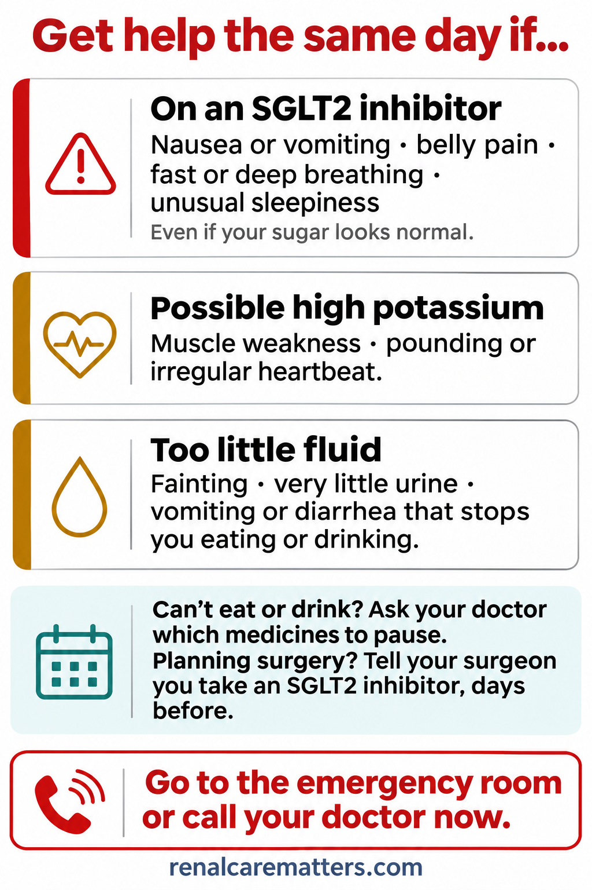
Save this card on your phone. Nausea, belly pain or fast breathing on an SGLT2 inhibitor, muscle weakness or a pounding heartbeat, or fainting and very little urine all need help the same day.I-save ang card na ito sa iyong telepono. Ang pagduduwal, pananakit ng tiyan o mabilis na paghinga habang umiinom ng SGLT2 inhibitor, panghihina ng kalamnan o malakas na tibok ng puso, o pagkahimatay at napakakaunting ihi ay nangangailangan ng tulong sa araw ding iyon.I-save kining card sa imong telepono. Ang kasukaon, sakit sa tiyan o paspas nga pagginhawa samtang nag-inom og SGLT2 inhibitor, kahuyang sa kaunoran o kusog nga pitik sa kasingkasing, o pagkaluya ug gamay kaayo nga ihi nagkinahanglan og tabang sa samang adlaw.I-save me ing card a iti king telepunu mu. Ing pamagsuka, sakit ning tiyan o masikan a pamanginawa kabang miinum kang SGLT2 inhibitor, kalupayan ning laman o masikan a pamitibuk ning pusu, o pamagmamatuk at kakaunting isbu, kailangan dang saup king aldo mu namu.
- SGLT2
- Sodium-glucose cotransporter 2
Common questionsMga karaniwang tanongKasagarang mga pangutanaKaraniwang kutang
Fuel selection, membrane injury, and what changes Monday's prescription
Diabetic kidney disease (DKD) is, among other things, a disorder of renal energetics. Hyperglycemia raises the filtered load of glucose and sodium, the proximal tubule (PT) reabsorbs more of both, and transport work rises with it. Over time and in some compartments, mitochondrial stress, impaired repair and altered lipid handling reduce metabolic flexibility. Downstream of those changes, membranes rich in polyunsaturated fatty acids become targets for iron-dependent phospholipid peroxidation, the defining chemistry of ferroptosis. That chain is biologically coherent and increasingly visible in human tissue, but its causal links have been tested mainly in animals and cultured cells.
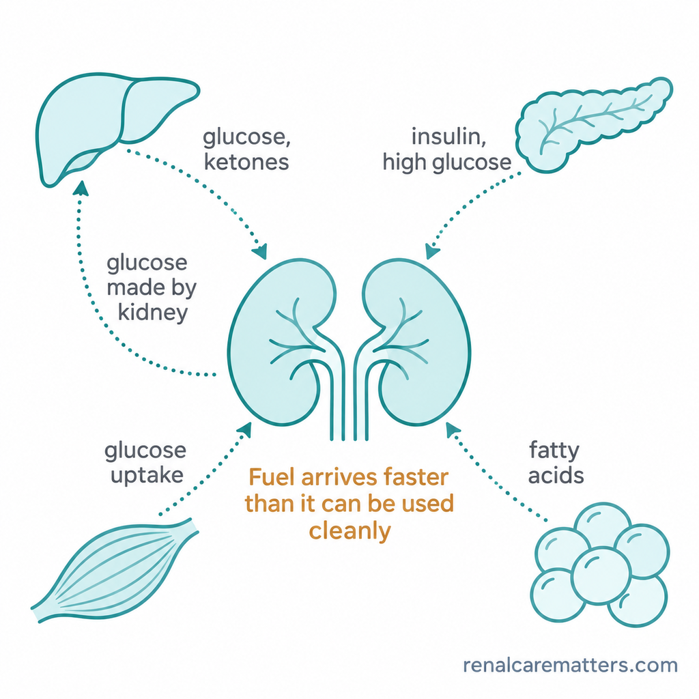
DKD as a whole-body fuel problem: hepatic glucose and ketones, pancreatic insulin and hyperglycemia, adipose fatty acids and muscle uptake converge on a kidney that also contributes glucose by gluconeogenesis.
Treatment, by contrast, rests on randomized evidence for patient-important outcomes. Renin–angiotensin system (RAS) blockade, sodium-glucose cotransporter 2 (SGLT2) inhibitors (abbreviated SGLT2i), finerenone and semaglutide reduce kidney failure or kidney-composite events in the populations that were studied. Their proposed metabolic effects, including ketone-fuel shifts and suppression of ferroptosis in models, are plausible mediators, not established ones. Decisions still run on estimated glomerular filtration rate (eGFR), urine albumin-to-creatinine ratio (UACR), potassium and clinical context.
Fuel use is compartment- and stage-specific
Early diabetic cortex can show more substrate flux; established fibrotic human tubules show lower fatty acid oxidation (FAO) gene expression. Both can be true.
Human tissue fits ferroptosis; experiments test cause
Biopsies show lipid-peroxidation and pathway signatures. Perturbation and rescue in mice and cells probe whether those changes kill cells.
Prescribe by phenotype and trial evidence
Choose and sequence therapy by diabetes type, eGFR, UACR and potassium, using outcome trials and current guidance, not mechanistic appeal.
A kidney uses different fuels in different places
The PT spends a large share of the kidney's adenosine triphosphate (ATP) on sodium-coupled transport, powered by the basolateral Na⁺/K⁺-ATPase. Fatty acid oxidation feeding mitochondrial oxidative phosphorylation (OXPHOS) supports much of that work, and the cortex also produces glucose by gluconeogenesis. Glucose reabsorption through SGLT2 in the early PT, and sodium-glucose cotransporter 1 (SGLT1) further along, is transport: the tubule moves glucose back to blood without necessarily oxidizing it. Keeping transport, glucose oxidation and glucose production as three separate ideas prevents the common error of assuming that a glucose-rich tubule is a glucose-burning tubule. Further along, the thick ascending limb (TAL) still spends considerable ATP on transport in an outer medulla with little oxygen reserve, and the collecting duct (CD) fine-tunes the final urine. For general renal energetics, see Kidney Energy and Your Kidneys and Blood Sugar.
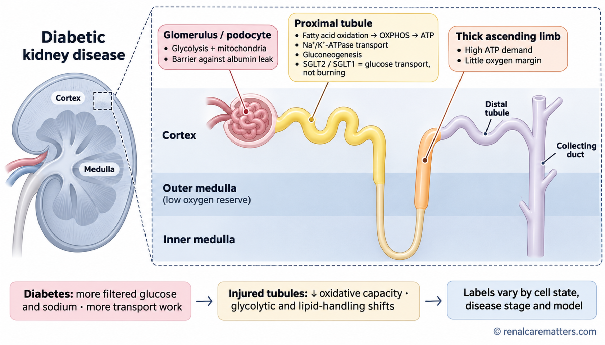
Qualitative fuel dependence along the nephron. SGLT2 and SGLT1 move glucose; they do not burn it. Labels change with cell state, disease stage and experimental model.
- ATP
- Adenosine triphosphate
- OXPHOS
- Oxidative phosphorylation
- SGLT1/2
- Sodium-glucose cotransporter 1/2
| Region | What to teach | What changes in DKD |
|---|---|---|
| Proximal tubule | High ATP demand for sodium-coupled transport; FAO and OXPHOS carry much of it; cortical gluconeogenesis; SGLT2/SGLT1 glucose transport is separate from glucose oxidation. | Early diabetes can increase transport work and substrate flux. Injured or fibrotic tubules can lose oxidative capacity and show glycolytic and lipid-handling changes. Keep cell state, stage and model separate. |
| Thick ascending limb (TAL) and distal segments | The TAL still spends considerable ATP on transport. Segments differ in glycolytic capacity and oxygen supply; the outer medulla has a small oxygen reserve, but it is not one uniform cell type. | Transport redistribution can change local oxygen demand. Proposed regional oxygen effects of therapy are hypotheses; oxygen delivery and oxygen consumption are different quantities. |
| Glomerulus and podocytes | Podocytes maintain the filtration barrier and draw on glycolytic and mitochondrial pathways depending on context. | Lipid remodeling, oxidant stress and podocyte injury may contribute to albumin leakage. Podocyte and tubular injury frequently coexist. |
From higher transport work to loss of metabolic flexibility
Long-chain fatty acids enter mitochondria through carnitine palmitoyltransferase 1 (CPT1), undergo β-oxidation, and feed the tricarboxylic acid (TCA) cycle and the respiratory chain. The transcriptional program that sustains this machinery runs largely through peroxisome proliferator-activated receptor alpha (PPARα) and its coactivator, peroxisome proliferator-activated receptor gamma coactivator 1-alpha (PGC-1α). In a transcriptome study of 95 normal and fibrotic human kidney samples, fibrotic tubules expressed less of this FAO program and held more intracellular lipid, and experimental inhibition of FAO in tubular cells reproduced a profibrotic phenotype (Kang et al., 2014). Tubule-specific overexpression of CPT1A (the kidney isoform of CPT1) protected mice from fibrosis in three injury models, which supports a causal role in fibrosis generally, although none of those models was diabetic (Miguel et al., 2021).
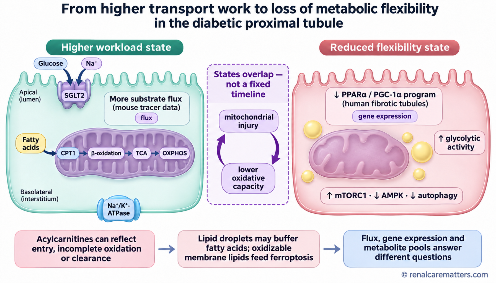
Two overlapping states rather than a fixed timeline. Chips label the kind of measurement behind each observation: tracer flux in mice, or gene expression in human fibrotic tubules.
- AMPK
- AMP-activated protein kinase
- CPT1
- Carnitine palmitoyltransferase 1
- mTORC1
- Mechanistic target of rapamycin complex 1
- OXPHOS
- Oxidative phosphorylation
- PGC-1α
- Peroxisome proliferator-activated receptor gamma coactivator 1-alpha
- PPARα
- Peroxisome proliferator-activated receptor alpha
- SGLT2
- Sodium-glucose cotransporter 2
- TCA
- Tricarboxylic acid (cycle)
That human signal has to be reconciled with tracer work. In the db/db mouse, stable-isotope flux analysis found increased glucose and fatty acid metabolism in the diabetic kidney cortex, together with protein hyperacetylation and mitochondrial dysfunction (Sas et al., 2016). The same paper found that urinary, not plasma, TCA-cycle intermediates predicted progression of DKD in American Indian, Finnish and US cohorts. Species, disease stage, compartment and measurement all differ between the two studies: early murine flux versus gene expression in established human fibrosis. The defensible conclusion is that substrate pressure and lost oxidative capacity can coexist and alternate, not that the whole kidney switches from fat to glucose. Some people lose eGFR without marked albuminuria, so no single sequence fits every patient.
Three measurement cautions keep this section honest. First, an acylcarnitine that accumulates may reflect increased entry, incomplete oxidation or reduced clearance; abundance alone does not identify the defect. Second, lipid uptake, de novo synthesis, neutral storage in triglyceride droplets and incorporation into membranes are separate processes. Droplets may even buffer free fatty acids in some settings, whereas oxidation-prone membrane phospholipids belong to the ferroptosis branch discussed below. Third, gene expression, static metabolite pools and tracer flux answer different questions and should never be presented as one kind of evidence. Urinary metabolomics in human DKD showed 13 metabolites reduced compared with healthy controls, 12 of them also lower than in diabetes without CKD (chronic kidney disease), a pattern consistent with mitochondrial dysfunction and altered organic-anion handling (Sharma et al., 2013); urine signals, however, integrate production, tubular handling and clearance.
Glycolysis is not simply harmful. In proteomic studies of glomeruli from people who had lived 50 years or longer with diabetes without nephropathy, glycolytic, sorbitol, methylglyoxal and mitochondrial enzymes were higher, and pyruvate kinase M2 (PKM2) activity was preserved; hyperglycemia inactivated PKM2 in mouse glomeruli, and pharmacologic PKM2 activation was protective (Qi et al., 2017). Efficient glycolytic flux that clears toxic intermediates may protect, while flux that backs up into side pathways may harm.
Where SGLT2 inhibitors fit, mechanistically
Research biopsies from youth with type 2 diabetes (T2D), aged 12 to 21 years, showed that those taking SGLT2 inhibitors (10 participants) had transcriptional profiles closer to healthy controls than those not taking them (6 participants), with lower signaling through the mechanistic target of rapamycin complex 1 (mTORC1) in tubules (Schaub et al., 2023). In mice, empagliflozin raised ketone bodies, and ketone-dependent inhibition of mTORC1 was required for its renoprotection (Tomita et al., 2020). Packer (2020) framed SGLT2 inhibition as restoring fasting-like nutrient-deprivation signaling and autophagy. These are coherent mediators, and the "thrifty substrate" idea dates to 2016 (Ferrannini et al., 2016), but none has been shown to explain the outcome-trial benefit in people.
How a vulnerable membrane becomes a site of injury
Ferroptosis is regulated cell death driven by iron-dependent phospholipid peroxidation (Dixon et al., 2012). Susceptibility rises when oxidation increases, when oxidizable membrane lipids accumulate, or when defenses weaken; any one of the three can tip the balance. Read the figure in its numbered order.
The kidney proof of principle is strong in models. Inducible whole-body Gpx4 deletion caused acute renal failure and death in mice (Friedmann Angeli et al., 2014), and synchronized tubular necrosis after ischemia–reperfusion involved ferroptosis and was blunted by ferrostatins (Linkermann et al., 2014). In diabetic conditions, tubular cells exposed to transforming growth factor beta 1 (TGF-β1) showed ferroptotic features (Kim et al., 2021). Experimentally supported upstream stresses include carbonyl and advanced glycation end product (AGE) stress, impaired autophagy with low AMP-activated protein kinase (AMPK) activity, and mitochondrial reactive oxygen species (ROS). Autophagy can preserve organelle quality, while selective ferritin degradation (ferritinophagy) can raise labile iron under some conditions, so "more autophagy" is not uniformly protective.

Substrate, oxidation and defense. FSP1–CoQ runs parallel to GPX4, not downstream of it. The whole chain comes from laboratory models and is not a validated clinical test.
- ACSL4
- Acyl-CoA synthetase long-chain family member 4
- AMPK
- AMP-activated protein kinase
- CoQ
- Coenzyme Q
- FSP1
- Ferroptosis suppressor protein 1
- GPX4
- Glutathione peroxidase 4
- GSH
- Reduced glutathione
- LPCAT3
- Lysophosphatidylcholine acyltransferase 3
- PL-OH
- Phospholipid alcohol
- PL-OOH
- Phospholipid hydroperoxide
- PUFA
- Polyunsaturated fatty acid
- ROS
- Reactive oxygen species
- SLC7A11
- Solute carrier family 7 member 11, the light chain of system xc⁻
- TGF-β1
- Transforming growth factor beta 1
What counts as evidence of ferroptosis in a paper
Attribution needs convergent assays: a cell-death readout, direct measurement of phospholipid peroxidation, pathway perturbation, and rescue with orthogonal interventions, for example a lipid radical-trapping agent plus genetic or iron-dependent evidence. Staining for 4-hydroxynonenal (4-HNE), malondialdehyde (MDA) levels, GPX4 immunostaining, a transcriptomic enrichment score or abnormal mitochondrial morphology each has limited specificity on its own. Serum ferritin, transferrin saturation and prescribed iron therapy are separate clinical topics; nothing in this literature changes iron repletion for iron-deficiency anemia in chronic kidney disease, which follows the KDIGO (Kidney Disease: Improving Global Outcomes) 2026 anemia guideline (Babitt et al., 2026). Proactive intravenous iron was safe in maintenance hemodialysis in a large randomized trial (Macdougall et al., 2018).
What the new studies actually measured
Each card separates population, measurement, result and interpretation, and badges each finding by evidence type, including the randomized controlled trial (RCT): Human association Human RCT Experimental. When a paper combines types, the badge sits on the individual finding. Donors are reported separately from cells or nuclei, because a single-cell count is a profiling count, not a sample size. Biopsy series tend to overrepresent clinically selected or advanced disease.
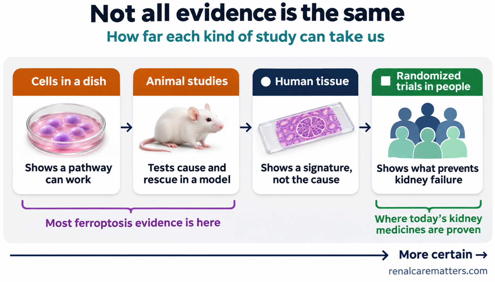
How far each kind of study can take us. The badge shapes match the evidence badges on the study cards below.
Before pooling: check for overlap
Three of the 2026 podocyte papers below (Cell Death Discovery, Fundamental Research and Diabetologia) share a corresponding group. Before presenting them as independent replication, compare author lists, sample accessions and recruitment identifiers for overlapping cohorts.
Kang et al., 2014 · Nature Medicine
- Population
- 95 normal and fibrotic human kidney samples (mixed etiology), plus cells and mice
- Measurement
- Genome-wide transcriptomics; FAO inhibition and rescue
- Result
- Human association Lower tubular FAO gene expression and more lipid in fibrosis. Experimental FAO inhibition drove profibrotic changes.
- Interpretation
- Fibrosis context, not DKD-specific; supports a tissue association.
Sas et al., 2016 · JCI Insight
- Population
- db/db mice; human urine cohorts (American Indian, Finnish, US)
- Measurement
- Stable-isotope flux in mice; urinary metabolomics in people
- Result
- Experimental Higher cortical glucose and fatty acid flux with mitochondrial dysfunction. Human association Urinary TCA intermediates predicted DKD progression.
- Interpretation
- The flux was murine. Urine signals integrate production, handling and clearance.
Matsui et al., 2025 · Diabetologia
- Population
- Human DKD biopsies; type 1 (streptozotocin) and type 2 (db/db) diabetic mice; primary PT cells
- Measurement
- Immunostaining; ischemia–reperfusion with ferrostatin-1; Atg5 deletion; AMPK activation
- Result
- Human association More 4-HNE, SQSTM1 (sequestosome 1, p62) accumulation and lower phosphorylated AMPK in PT cells. Experimental Defective autophagy and inactive AMPK increased ferroptotic susceptibility; rapamycin or AMPK activation reduced it.
- Interpretation
- Human staining supports a signature; causality sits in the experimental layer.
Qiu et al., 2026 · Cell Death Discovery
- Population
- Human diabetic kidney single-cell data; mice; cultured podocytes
- Measurement
- Single-cell RNA sequencing; spatial metabolomics; pathway perturbation
- Result
- Human association Podocyte enrichment of ferroptosis and glycerophospholipid pathways. Experimental Mitogen-activated protein kinase 14 (MAPK14, p38α), SLC7A11 and GPX4 dysregulation; astragaloside IV protective in models.
- Interpretation
- Model-dependent pathway hypothesis; astragaloside IV belongs in the experimental arm only.
Qiu et al., 2026 · Fundamental Research
- Population
- Human formalin-fixed biopsies; diabetic mice
- Measurement
- Spatial transcriptomics, metabolomics and single-cell data across 39,006 cells
- Result
- Human association Podocyte glycerolipid remodeling and dual-specificity phosphatase 4 (DUSP4) and matrix metalloproteinase 3 (MMP3) signaling; urinary MMP3 proposed as a marker.
- Interpretation
- 39,006 is a profiling count. Spatial proximity and transcript abundance generate hypotheses about cell communication.
Qiu et al., 2026 · Diabetologia
- Population
- 156,043 human nuclei (a small number of DKD biopsies plus controls); db/db mice; podocytes; urine case–control set
- Measurement
- Single-nucleus RNA sequencing; metformin experiments; targeted urinary metabolomics
- Result
- Human association Ferroptosis and fatty acid pathways enriched in podocytes; urinary palmitoylcarnitine reported area under the curve 0.974. Experimental Metformin inhibited the MAPK14–SLC7A11–GPX4 axis in mice and cells.
- Interpretation
- Diagnostic accuracy from a small case–control comparison against healthy controls is inflated by spectrum and kidney-function differences; it needs external disease controls, prespecified thresholds, calibration and incremental value. The metformin signal is experimental and does not change eGFR-based metformin limits.
Yang et al., 2026 · Advanced Science
- Population
- Human DKD biopsies; Klotho-deficient, Klotho-overexpressing and SPARC (secreted protein acidic and rich in cysteine) knockout mice; podocytes
- Measurement
- Staining; genetic models; knockdown and overexpression
- Result
- Human association Lower Klotho tracked with ferroptosis markers. Experimental Klotho loss derepressed SPARC, driving podocyte mitochondrial injury and ferroptosis.
- Interpretation
- The human arm is associative; global animal models have limited cell specificity.
Tan et al., 2026 · Acta Diabetologica
- Population
- Genetic association data; public renal transcriptomes; high-glucose HK-2 cells
- Measurement
- Mendelian randomization; machine learning; single-cell and spatial mapping
- Result
- Human association One-carbon and transsulfuration metabolites linked to DKD; cystathionine gamma-lyase (CTH) lower in injured PT subpopulations. Experimental High glucose suppressed CTH in cells.
- Interpretation
- Exploratory; a mean model area under the curve of 0.963 on public datasets needs prospective validation.
REMODEL · Tuttle, Bjornstad, et al., 2026 · Nature Medicine
- Population
- 106 adults with T2D and CKD randomized to semaglutide 1 mg weekly or placebo for 52 weeks; kidney biopsy subset 33, single-nucleus RNA sequencing 22, spatial transcriptomics 13 (paired samples)
- Measurement
- Coprimary magnetic resonance imaging (MRI) outcomes: oxygenation (R2*), perfusion, inflammation (T1 mapping)
- Result
- Human RCT Coprimary MRI outcomes did not differ. Secondary: lower renal artery resistive index, stabilized apparent diffusion coefficient (interpreted as less fibrosis progression), pronounced glomerular endothelial transcriptomic effects with fewer nearby immune cells. UACR treatment ratio 0.60 (95% confidence interval 0.41–0.88) at 52 weeks.
- Interpretation
- A mechanistic bridge to the FLOW outcome trial. The UACR result is a secondary surrogate, and the molecular findings do not establish ferroptosis as a mediator of benefit.
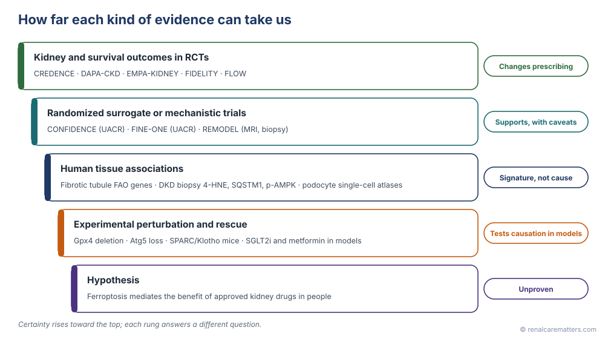
Each rung answers a different question. Only the top rung changes prescribing on its own.
- 4-HNE
- 4-Hydroxynonenal
- AMPK
- AMP-activated protein kinase
- FAO
- Fatty acid oxidation
- MRI
- Magnetic resonance imaging
- RCT
- Randomized controlled trial
- SGLT2i
- Sodium-glucose cotransporter 2 inhibitor
- SPARC
- Secreted protein acidic and rich in cysteine
- SQSTM1
- Sequestosome 1 (p62)
- UACR
- Urine albumin-to-creatinine ratio
Mechanistic studies of approved drugs in diabetic models follow the same rules. Empagliflozin reduced tubular ferroptosis through AMPK and nuclear factor erythroid 2-related factor 2 (NRF2) signaling in diabetic mice (Lu et al., 2022), and dapagliflozin reduced lipid peroxidation and restored GPX4, GSH and SLC7A11 through β-hydroxybutyrate in mice and cells (Tian et al., 2025). These findings make anti-ferroptotic activity a plausible contributor to SGLT2 inhibitor benefit; they do not show that it is one in people. A 2026 review in Nature Reviews Nephrology summarizes the broader field, including acute kidney injury, where the preclinical data are most mature (Wang et al., 2026).
The pillars, read through metabolism
Every pillar was licensed on outcomes, and every pillar has a metabolic story. Keeping the two columns apart is the point of this table: the right-hand column is why we prescribe, the middle columns are why it might work.
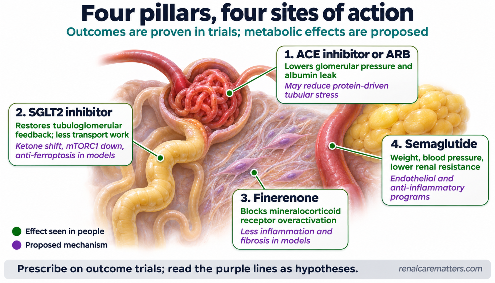
Prescribe on outcome trials; read the purple lines as hypotheses. Green lines are effects seen in people.
- ACE
- Angiotensin-converting enzyme
- ARB
- Angiotensin receptor blocker
- mTORC1
- Mechanistic target of rapamycin complex 1
- SGLT2
- Sodium-glucose cotransporter 2
| Agent | Hemodynamic and transport effect | Proposed metabolic mediator (label) | Outcome evidence |
|---|---|---|---|
| RAS blockade (ACE inhibitor or ARB) | Lowers efferent arteriolar tone and intraglomerular pressure; less albumin delivered to the PT | Less protein-driven tubular stress, including iron delivered with filtered transferrin (mechanistic hypothesis) | Foundation therapy in albuminuric diabetic CKD with hypertension; a dual ACE inhibitor plus ARB combination is avoided |
| SGLT2 inhibitor | Restores tubuloglomerular feedback; less proximal sodium and glucose reabsorption; acute reversible eGFR dip | Lower transport work; ketone-fuel shift and mTORC1 inhibition; restored autophagy; anti-ferroptotic effects in models (proposed mediators) | CREDENCE, DAPA-CKD and EMPA-KIDNEY kidney composites reduced (see Outcome Data) |
| Finerenone (nonsteroidal mineralocorticoid receptor antagonist) | Modest blood pressure effect; small acute eGFR dip | Less mineralocorticoid receptor–driven inflammation, oxidative stress and fibrosis (preclinical); added UACR effect over empagliflozin appeared non-hemodynamic in a CONFIDENCE mediation analysis (Agarwal, Correa-Rotter, et al., 2026) | FIDELITY pooled kidney composite reduced in T2D; UACR reduction in type 1 diabetes (T1D) |
| Semaglutide (GLP-1 receptor agonist) | Weight and blood pressure reduction; lower renal resistive index (REMODEL) | Endothelial and anti-inflammatory programs; less perirenal fat (mechanistic trial, secondary outcomes) | FLOW kidney composite reduced in T2D |
| Metformin | None of note | AMPK activation; inhibition of podocyte ferroptosis signaling in mice (experimental) | Glucose lowering; prescribing limits by eGFR are unchanged |
Clinical composites and surrogate results, kept apart
The table pairs each relative effect with the arm data. "Kidney failure" definitions differ by trial; the source detail uses each paper's own endpoint language. A strong divider separates clinical composites from albuminuria surrogates.
| Study and population | Endpoint and follow-up | Effect and arm data |
|---|---|---|
| CREDENCE (2019), canagliflozin vs. placebo; 4,401 with T2D and albuminuric CKD on RAS blockade; eGFR 30 to <90, UACR >300 to 5,000 mg/g (Perkovic et al., 2019) | Kidney failure, doubling of creatinine, or renal or cardiovascular death; median 2.62 years | Hazard ratio (HR) 0.70 (0.59–0.82); 43.2 vs. 61.2 events per 1,000 patient-years |
| DAPA-CKD (2020), dapagliflozin vs. placebo; 4,304 with and without T2D; eGFR 25–75, UACR 200–5,000 (Heerspink et al., 2020) | Sustained ≥50% eGFR decline, kidney failure, or renal or cardiovascular death; median 2.4 years | HR 0.61 (0.51–0.72); 197/2,152 vs. 312/2,152 |
| EMPA-KIDNEY (2023 issue), empagliflozin vs. placebo; 6,609 with and without diabetes; eGFR 20 to <45, or 45 to <90 with UACR ≥200 (Herrington et al., 2022) | Kidney progression (including sustained ≥40% eGFR decline, sustained eGFR <10, kidney replacement therapy or renal death) or cardiovascular death; median 2.0 years | HR 0.72 (0.64–0.82); 432/3,304 vs. 558/3,305 |
| FIDELITY (2022), finerenone vs. placebo; 13,026 with T2D and CKD on optimized RAS blockade; prespecified pooled analysis of FIDELIO-DKD and FIGARO-DKD (Agarwal, Filippatos, et al., 2022; Bakris et al., 2020; Pitt et al., 2021) | Kidney failure, sustained ≥57% eGFR decline, or renal death; median 3.0 years | HR 0.77 (0.67–0.88); 360/6,519 (5.5%) vs. 465/6,507 (7.1%); hyperkalemia-related permanent discontinuation 1.7% vs. 0.6% |
| FLOW (2024), semaglutide 1 mg weekly vs. placebo; 3,533 with T2D and CKD; eGFR 50–75 with UACR >300 to <5,000, or eGFR 25 to <50 with UACR >100 to <5,000 (Perkovic et al., 2024) | Kidney failure, sustained ≥50% eGFR decline, or renal or cardiovascular death; median 3.4 years; stopped early at a prespecified interim analysis | HR 0.76 (0.66–0.88); 331/1,767 vs. 410/1,766 |
| Surrogate endpoints below: urine albumin, not clinical events | ||
| CONFIDENCE (2025), finerenone plus empagliflozin vs. each alone; 818 randomized, 800 in the efficacy analysis; T2D with CKD on RAS blockade; eGFR 30–90, UACR 100–5,000 (Agarwal, Green, Heerspink, Mann, et al., 2025) | Ratio of UACR change from baseline to day 180 | 0.71 (0.61–0.82) vs. finerenone alone and 0.68 (0.59–0.79) vs. empagliflozin alone, that is, 29% and 32% lower relative UACR |
| FINE-ONE (2026), finerenone vs. placebo; 242 with T1D and CKD on an ACE inhibitor or ARB; eGFR 25 to <90, UACR 200 to <5,000 (Heerspink et al., 2026) | Relative change in UACR over 6 months | Between-arm geometric mean ratio 0.75 (0.65–0.87); ratios to baseline 0.66 (0.60–0.73) vs. 0.88 (0.79–0.98); hyperkalemia 10.1% vs. 3.3% |
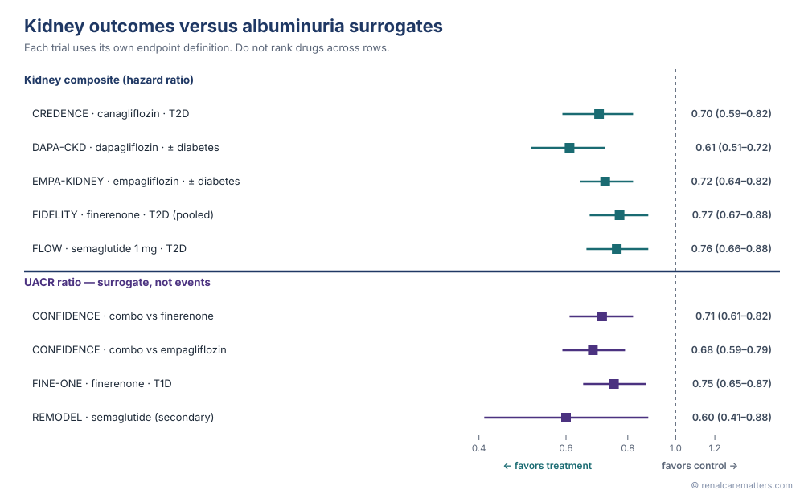
Upper block: time-to-event kidney composites. Lower block: albuminuria ratios, which are surrogates. Endpoint definitions differ, so rows are not a ranking.
- T1D/T2D
- Type 1 / type 2 diabetes
- UACR
- Urine albumin-to-creatinine ratio
Raw event fractions reflect each trial's population and follow-up. In FLOW, for example, the crude difference is about 4.5 percentage points (23.2% vs. 18.7%), which is not the same quantity as the time-to-event hazard ratio. Comparative ranking across trials, multiplying hazard ratios for drug combinations, and extrapolating an individual number needed to treat are deliberately left out. Two 2026 follow-ups add nuance. FLOW's benefit on kidney outcomes and death was consistent across the eGFR and UACR strata represented in the trial, including advanced CKD (Tuttle, Mann, et al., 2026). The prespecified CONFIDENCE hyperkalemia analysis did not establish that concurrent empagliflozin protects against finerenone-associated hyperkalemia, so potassium monitoring stays unchanged when the two are combined (Agarwal, Green, Heerspink, McGill, et al., 2025).
Bedside recommendations
Sources are the American Diabetes Association (ADA) Standards of Care in Diabetes—2026, Sections 9, 11 and 16 (American Diabetes Association Professional Practice Committee, 2026a, 2026b, 2026c), the KDIGO 2024 chronic kidney disease guideline and the KDIGO 2022 diabetes-in-CKD guideline, with the Asian Pacific Society of Nephrology (APSN) 2025 DKD guideline for regional context (Liew et al., 2025). KDIGO's 2026 diabetes and CKD update was a public-review draft at the time of writing and is not quoted here; recheck its status before relying on any change. Guidance, regulatory labeling, trial inclusion criteria and local availability are listed separately on purpose.
| Decision | Implementation |
|---|---|
| Find and confirm CKD | Check eGFR and a spot UACR at least annually in T2D from diagnosis and in T1D after 5 or more years; with CKD, monitor 1 to 4 times a year according to the eGFR and albuminuria risk category. Establish chronicity over at least 3 months or from other evidence. Because UACR varies, two of three specimens over 3 to 6 months should be abnormal before calling albuminuria persistent; a first-morning repeat helps. Transient causes include vigorous exercise, symptomatic urinary infection, fever, menstruation, heart failure, marked hyperglycemia and uncontrolled hypertension. |
| Look beyond DKD | Active urine sediment, an abrupt eGFR decline, rapidly rising proteinuria or nephrotic syndrome prompt evaluation for another or additional cause. In T1D, kidney disease without retinopathy strengthens that suspicion. See When It May Not Be DKD. |
| Foundation | Individualize blood pressure and glycemic targets. ADA 2026 recommends an on-treatment goal below 130/80 mm Hg when safely attainable. Add cardiovascular risk management, nutrition, physical activity and smoking cessation. Use an ACE inhibitor or ARB at the highest tolerated dose for diabetes with hypertension and albuminuria; avoid dual ACE inhibitor plus ARB therapy. KDIGO advises checking blood pressure, creatinine and potassium within 2 to 4 weeks of starting or increasing RAS blockade; a creatinine rise of 30% or less without volume depletion generally supports continuing. |
| SGLT2 inhibitor | ADA recommends an SGLT2 inhibitor with demonstrated benefit for T2D and CKD from eGFR ≥20 mL/min/1.73 m²; product-specific initiation labeling may differ. Continuing below 20 can be appropriate if tolerated, until kidney replacement therapy. Counsel on genital infection, volume depletion, fasting, sick days and ketoacidosis. Keep the T2D pathway separate from T1D, where ketoacidosis risk is higher. |
| Finerenone in T2D | KDIGO 2022 suggests a nonsteroidal mineralocorticoid receptor antagonist with proven benefit for T2D with eGFR ≥25, normal potassium and albuminuria (UACR ≥30 mg/g) despite maximum tolerated RAS blockade (2A). Trial potassium eligibility and label initiation thresholds are different things; follow the local product label for starting and titration, with potassium checked at about 4 weeks. |
| Simultaneous finerenone plus SGLT2 inhibitor | ADA 2026 allows consideration of simultaneous initiation in adults with T2D, UACR ≥100 mg/g and eGFR 30–90 on RAS blockade, reflecting CONFIDENCE. The supporting endpoint is a surrogate (UACR at day 180); check each drug's thresholds and safety individually. |
| GLP-1 receptor agonist | In T2D with CKD, use a glucagon-like peptide-1 receptor agonist (GLP-1 RA) with demonstrated benefit. Semaglutide 1 mg weekly has dedicated kidney outcome data in FLOW; do not assume the same evidence for every agent or dose. Address gastrointestinal intolerance, poor intake and volume status. |
| Finerenone in T1D | See the dated update below. The U.S. indication rests on UACR reduction as a bridging biomarker, not on measured kidney failure events. |
| Metformin | Stays in the glucose-management lane with its eGFR-based initiation and continuation limits (see the metformin safety checker). The 2026 podocyte experiments create no ferroptosis indication. |
| Albuminuria response | In people with CKD and UACR ≥300 mg/g, ADA sets a goal of at least 30% UACR reduction to slow progression. Track it against a documented baseline with the serial UACR tracker. |

A sequence, not a rigid ladder: SGLT2 inhibitor, finerenone and GLP-1 receptor agonist steps are often combined, and simultaneous initiation can be considered when criteria are met.
- ACE
- Angiotensin-converting enzyme
- ARB
- Angiotensin receptor blocker
- BP
- Blood pressure
- CKD
- Chronic kidney disease
- eGFR
- Estimated glomerular filtration rate
- GLP-1
- Glucagon-like peptide-1
- SGLT2
- Sodium-glucose cotransporter 2
- UACR
- Urine albumin-to-creatinine ratio
Recommendations summarized from ADA 2026 Sections 9, 11 and 16, KDIGO 2024 and KDIGO 2022. Verify current Philippine product labeling through the Philippine Food and Drug Administration (FDA) verification portal before prescribing.
Finerenone in type 1 diabetes
FINE-ONE randomized 242 adults with T1D and CKD on an ACE inhibitor or ARB to finerenone or placebo. Over 6 months, UACR fell 34% with finerenone and 12% with placebo, a placebo-corrected reduction of 25%. Hyperkalemia occurred in 10.1% versus 3.3%, and 1.7% stopped finerenone for it. The eGFR fell 2.9 mL/min/1.73 m² more with finerenone and returned toward baseline during washout, consistent with a hemodynamic effect (Heerspink et al., 2026).
In September 2026 the U.S. Food and Drug Administration added an indication to reduce UACR in adults with CKD associated with T1D, inferring expected kidney benefit from the albuminuria effect and the bridging evidence from the T2D outcome trials. FINE-ONE did not directly measure kidney failure events. At the time of writing, the United States was the only country with this indication; confirm Philippine product indication before writing local prescribing copy.
A synthetic vignette
A 58-year-old with T2D has a stable eGFR of 45 mL/min/1.73 m², repeated UACR around 420 mg/g, potassium 4.6 mEq/L and blood pressure 136/82 mm Hg on a maximally tolerated ARB. There is no hematuria, and eGFR has been stable for a year. The phenotype fits DKD with high albuminuria, and the treatment review uses eGFR, UACR, potassium and context, not a ferroptosis marker.
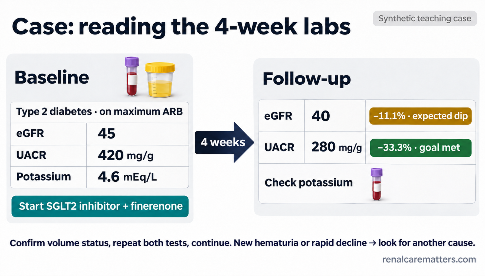
Paired-baseline arithmetic: a modest eGFR dip with a large UACR fall means continue, after confirming volume status and repeating both tests.
- ARB
- Angiotensin receptor blocker
- eGFR
- Estimated glomerular filtration rate
- SGLT2
- Sodium-glucose cotransporter 2
- UACR
- Urine albumin-to-creatinine ratio
Ketoacidosis, procedures and potassium
The ketone shift that makes SGLT2 inhibitors metabolically interesting is also their main hazard. The 2024 consensus on hyperglycemic crises defines diabetic ketoacidosis (DKA) in adults by three criteria: diabetes or glucose ≥200 mg/dL; ketosis, with blood β-hydroxybutyrate ≥3.0 mmol/L or urine ketones 2+ or more; and acidosis, with pH below 7.3 and/or bicarbonate below 18 mmol/L (Umpierrez et al., 2024). In a patient taking an SGLT2 inhibitor, nausea, vomiting, abdominal pain or rapid breathing should trigger urgent assessment even when glucose is near normal. This is escalation advice, not a home scoring tool; the clinician protocol is in the DKA management calculator.
Before elective procedures, U.S. labeling and ADA 2026 Section 16 hold canagliflozin, dapagliflozin and empagliflozin for at least 3 days and ertugliflozin for at least 4 days. Unknown agents, emergency surgery or an inadequate hold interval should go to the perioperative team. Restart once the patient is clinically stable, eating and drinking, and ketoacidosis risk has resolved. For finerenone, a potassium value above the label threshold means holding the drug per label, and any dose increase requires a current potassium and the previous eGFR.

A unit-ready card for ketoacidosis recognition and procedure holds. Unknown agents, emergency surgery or a short hold go to the perioperative team.
- SGLT2
- Sodium-glucose cotransporter 2
Membrane oxidation versus defense: a teaching demo
This qualitative model illustrates the balance described in the mechanism section. It is not a clinical score, uses no patient data, and has no validated thresholds. A real ferroptosis score would need a defined reference standard, independent prospective validation, calibration and evidence that using it changes care.
Balanced: oxidation is being repaired as fast as it forms.
Proximal tubule: high transport work and a mitochondria-dense cytoplasm make oxidant pressure the dominant lever in models.
Why plausible antioxidant strategies have disappointed
Bardoxolone methyl, an activator of the NRF2 antioxidant program, raised eGFR in T2D with stage 4 CKD, but the BEACON trial was stopped for excess heart failure events (HR 1.83, 1.32–2.55), and blood pressure and UACR rose alongside eGFR (de Zeeuw et al., 2013). A rising eGFR is not always protection. In a randomized crossover trial in 25 adults with eGFR below 60, nicotinamide riboside and coenzyme Q10 shifted circulating metabolites and lipids but did not improve peak oxygen consumption, work efficiency or eGFR (Ahmadi et al., 2023). These results are why "it lowers lipid peroxidation in a dish" cannot substitute for an outcome trial.
Applying this in Philippine practice
Diabetes is a leading cause of kidney failure among Filipinos starting dialysis. The APSN 2025 DKD guideline gives the regional frame for screening and pillar therapy (Liew et al., 2025). Practical points: SGLT2 inhibitors are widely available, including locally branded dapagliflozin; finerenone is marketed under the globally protected names Kerendia and Firialta, and its local indications should be confirmed on the Philippine FDA verification portal before the T1D indication is assumed. Semaglutide cost and access vary. Potassium monitoring at 2 to 4 weeks is often the practical bottleneck for finerenone, so plan laboratory timing at the visit where it is started. Herbal products marketed locally as kidney "detox" or antioxidant remedies have no outcome evidence, and some botanicals studied for anti-ferroptosis effects come from plants with known toxicity.
Open questions
- Is ferroptosis a cause of nephron loss in human DKD or a feature of cells already dying? Human interventional evidence is absent.
- Which ferroptosis readout can be measured in urine or blood, and does it predict progression beyond eGFR and UACR?
- Can fatty acid oxidation be restored in human tubules, and in which disease stage would that help rather than add substrate pressure?
- Do SGLT2 inhibitors act partly through ketones at the modest ketone concentrations seen clinically?
- Does combination pillar therapy change tubular metabolism more than any single agent?
Ferrostatins, liproxstatins, iron chelation and antioxidant supplements remain research tools in this context.
Clinical pearls
Five things to carry
Transport is not oxidation: a glucose-rich tubule is not necessarily a glucose-burning tubule. Mouse flux and human fibrosis data describe different stages and both can be true. Ferroptosis needs convergent assays, and no single stain proves it. Prescribe on outcome trials, eGFR, UACR and potassium, and label surrogate results as surrogates. Iron repletion and metformin limits are unchanged by this science.